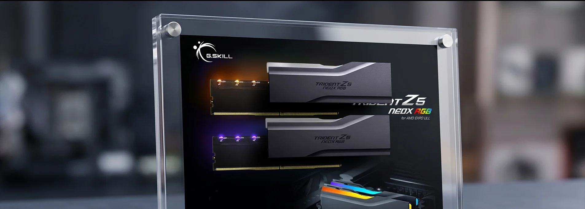
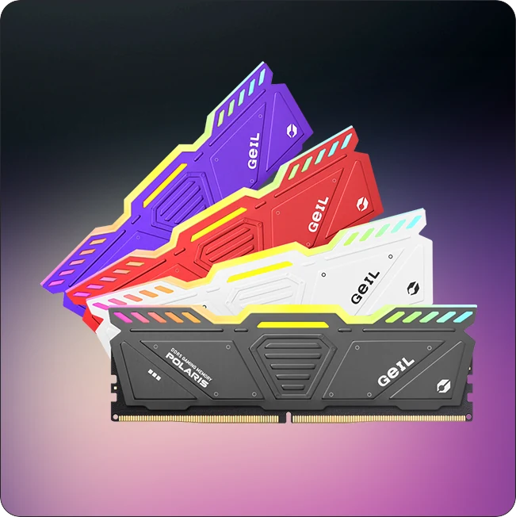
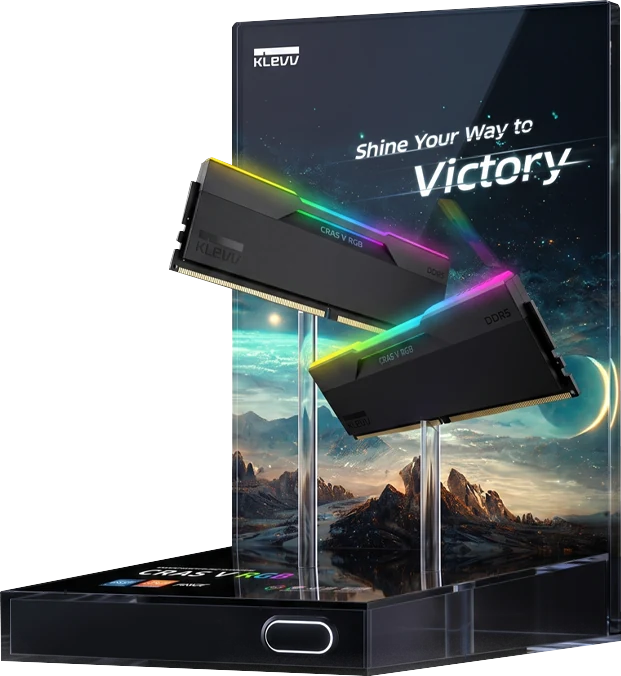
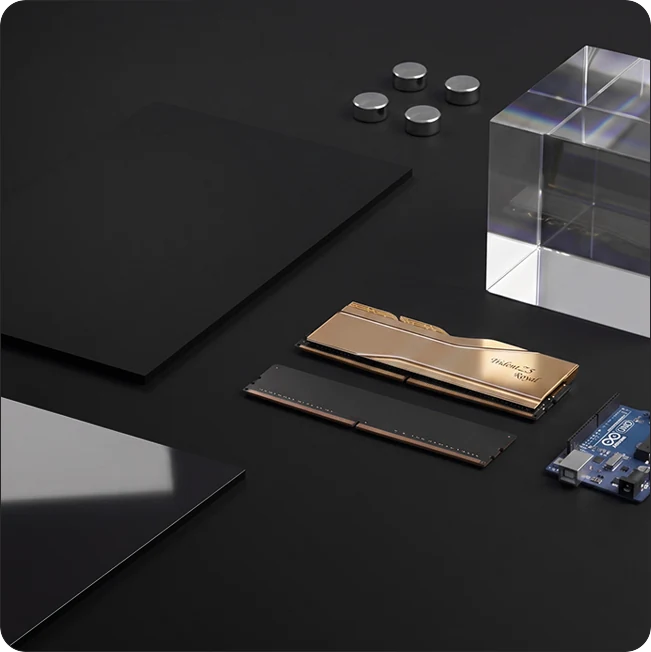
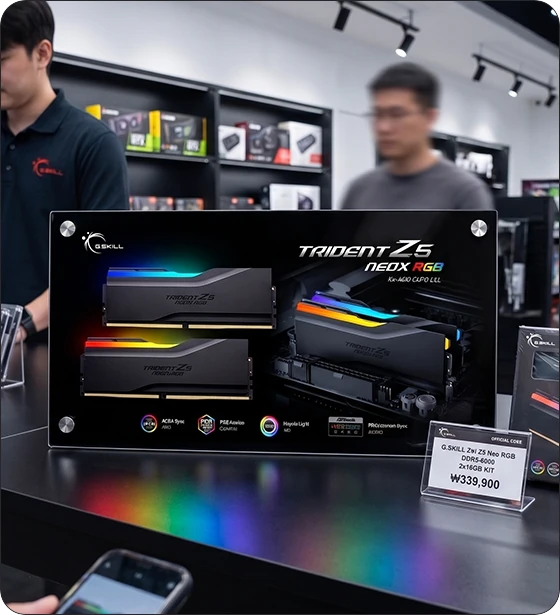
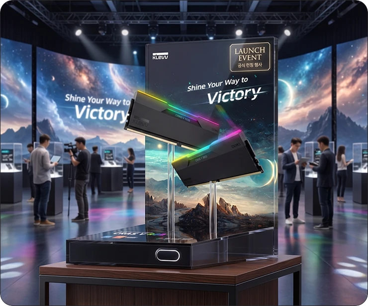
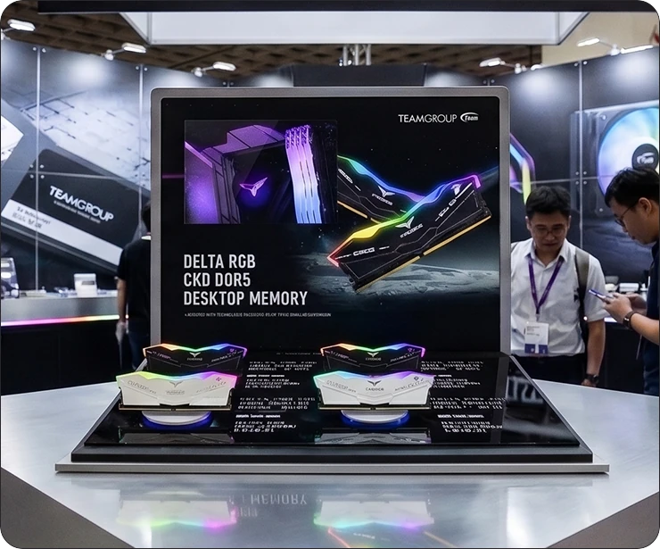
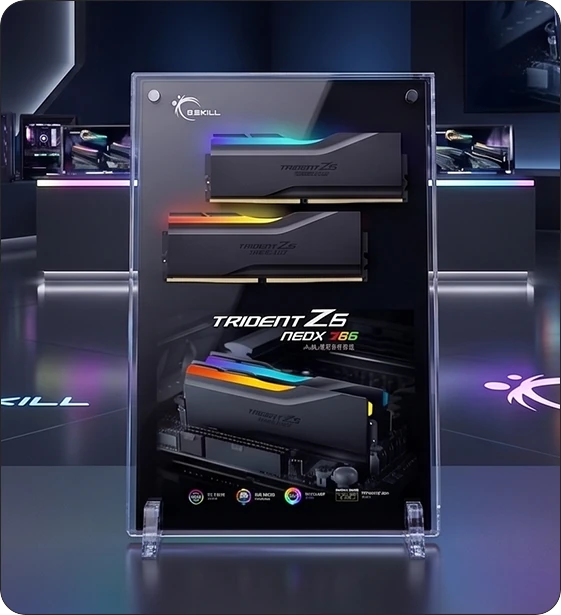
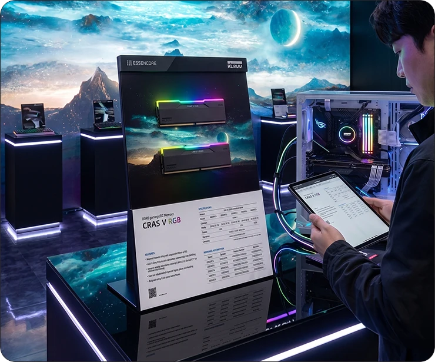

전시용 샘플 비용
판매하지 않는 전시 제품에도 실제
메모리가 필요합니다. 매장과 제품 수가
늘수록 비용이 반복됩니다.
램 슬롯에 직접 장착하지 않고도 RGB 조명을 구현하며, 방열판 교체만으로 다양한 메모리 제품을 전시할 수 있는 모듈형 RGB 메모리 디스플레이 시스템
일반적인 RGB 거치대는 실제 메모리의 골드 핑거 연결을 전제로 합니다.
제품이 늘어날수록 샘플 비용, 교체 시간, 전시 구조의 제약도 함께 커집니다.
판매하지 않는 전시 제품에도 실제
메모리가 필요합니다. 매장과 제품 수가
늘수록 비용이 반복됩니다.
골드 핑거와 슬롯 위치 때문에 각도와
구조가 고정됩니다. 대부분 비슷한
수직 전시로 귀결됩니다.
신제품이 출시될 때마다 메모리 전체
또는 거치대를 다시 준비해야 합니다.
브랜드와 방열판 디자인은 달라도
전시 방식은 비슷해 제품의 인상을
충분히 살리기 어렵습니다.
신제품 6종을 10개 매장에 전시하는
상황을 가정해 보겠습니다.
기존 방식에서는 최대 60개의 실제 메모리 샘플이 필요합니다.
모듈형 RGB 메모리 비주얼 거치대라면 방열판만 교체하여 동일한
거치대로 다양한 제품을 전시할 수 있습니다. 추가 메모리 샘플
구매는 사실상 필요하지 않습니다.
실제 메모리의 골드 핑거 대신, 독립형 RGB 더미 PCB와
후면 연결 소자로 조명을 작동시킵니다.

판매용 메모리를 대신해 RGB 조명과 전시 구조를 담당합니다. 실제 메모리 없이도 점등된 제품 장면을 만듭니다.
더미 PCB와 방열판 뒤쪽을 연결합니다. 골드 핑거를 슬롯에 직접 꽂지 않아도 빛을 전달할 수 있습니다.
더미 기판과 구동 시스템은 유지하고 보여줄 제품의 방열판만 교체합니다.
더미 기판은 유지하고
거치대의 형태부터 재질까지 전시 목적에 맞춰 자유롭게 제작할 수 있습니다.
포맥스, 아크릴 등 다양한 소재를 적용할 수 있으며, 액자형·거치형·스탠드형 등
원하는 방식으로 디자이너가 직접 설계해 제작합니다.
포맥스, 아크릴 등 전시 목적과 예산에 맞는 다양한 소재를 선택할 수 있습니다.
가볍고 제작 비용이 합리적이며,
다양한 형태의 전시물 제작에
적합한 소재입니다.
투명하고 고급스러운 마감으로
쇼룸과 프리미엄 전시에
적합한 소재입니다.
POP 액자형, 프레임형, 탁상형 등 원하는 형태로 디자이너가 직접 설계합니다.
책상과 카운터 위에
바로 세워 사용할 수 있는
가장 범용적인 형태입니다.
브랜드 그래픽과 함께
쇼룸 및 전시 공간에
고급스럽게 연출합니다.
카운터와 진열대에
안정적으로 거치하여
제품을 효과적으로 전시합니다.
화이트, 블랙, 게이밍, 한정판 방열판만
교체해 하나의 시스템에서 여러 제품을
운영할 수 있습니다.

제품을 공중에 띄우고, 벽면에 부착하고,
가장 잘 보이는 각도로 세울 수 있습니다.

구조, 소재, 그래픽, 컬러, 설치 방식까지
브랜드와 전시 환경을 기준으로 새롭게
설계합니다.

브랜드 컬러, 전환 속도, 밝기와 효과를 설정할 수 있습니다.
버튼이나 컨트롤러를 추가하면 소비자가 직접 색상을 바꾸는 경험도 만들 수 있습니다.
기존 방식은 제품마다 실제 메모리 샘플과 별도의 장착 구조가 필요합니다.
방열판만 교체해 비용과 시간을 줄이고, 다양한 제품을 유연하게 전시해보세요.
| 비교항목 | 기존 RGB 거치대 | 제안 시스템 |
|---|---|---|
| RGB 구동 | 실제 골드 핑거 연결 | 독립형 RGB 더미 PCB |
| 실제 메모리 | 필요 | 불필요 |
| 제품 변경 | 메모리 전체 교체 | 방열판만 교체 |
| 전시 형태 | 슬롯 중심 구조 | 플로팅·수직·경사·벽면 |
| 재사용성 | 제품 변경 시 제약 | 구동 시스템 지속 활용 |
| 디자인 | 기성 거치대 중심 | 브랜드별 맞춤 설계 |
| 소비자 조작 | 제한적 | 버튼·컨트롤러 적용 가능 |
하나의 시스템을 매장, 론칭 행사, 전시회와 브랜드 쇼룸까지 확장합니다.

Retail Store 제품 라인업을 정돈해 보여주고, 신제품 출시 시 방열판만 교체해 업데이트할 수 있습니다.

Launch Event 출시 제품의 디자인과 RGB 효과에 시선을 집중시킵니다.

Exhibition 플로팅 또는 대형 배열 구조로 멀리서도 보이는 비주얼 오브제를 만듭니다.

Brand Showroom 브랜드 컬러와 그래픽을 통일해 상설 전시 경험으로 확장합니다.

Pop-up & Content 캠페인 종료 후 방열판과 그래픽을 변경해 다음 프로모션이나 촬영에 다시 활용합니다.
목적과 공간을 먼저 이해하고, 구조·그래픽·RGB를
하나의 전시 경험으로 설계합니다.